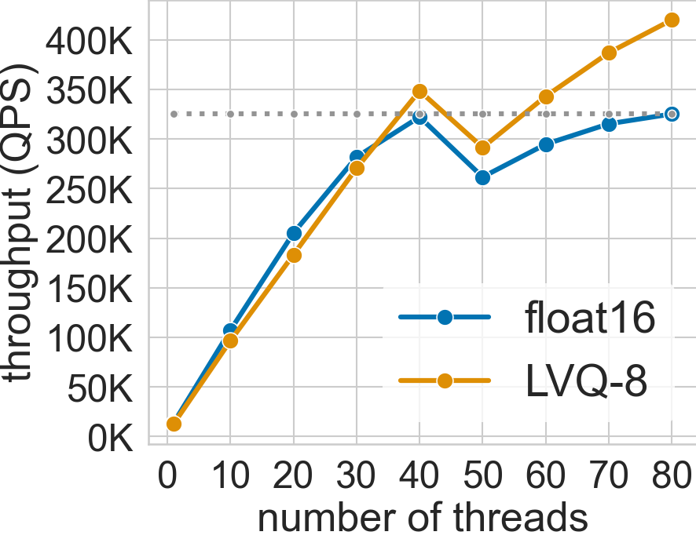
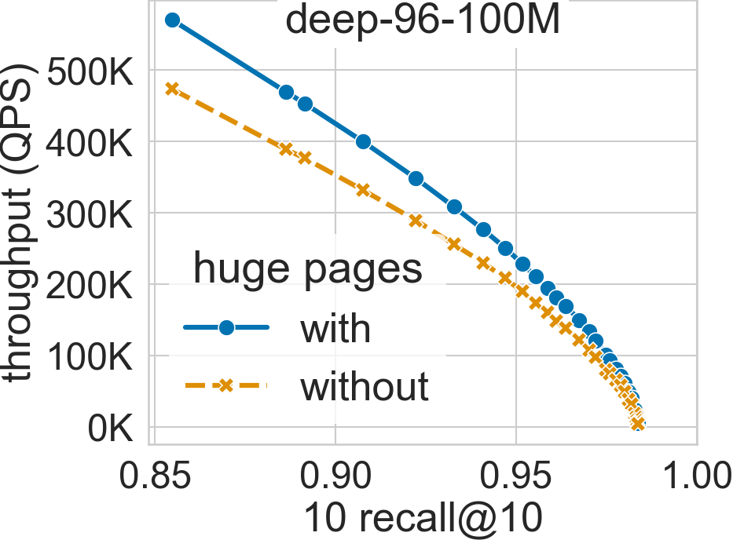
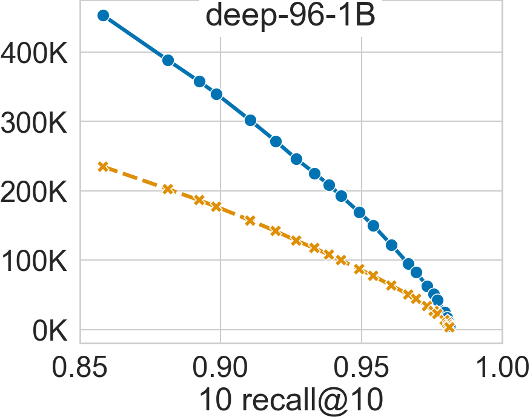

System Utilization
Multithreading
SVS can paralellize the search across queries with each thread being responsible for a subset of the query batch, running a single-thread search routine for each query in the batch.
SVS scales very well with the number of hardware threads used. The figure below shows this for the deep-96-100M dataset (see Datasets for details) with the system configuration described in System Setup and Datasets [1] [ABHT23].
The system has 40 cores per socket with 2-way hyper-threading enabled (maximum 80 threads per socket). The QPS increases up to 40 threads when using both float16 and LVQ-8 compressed vectors.
For float16, the performance scaling slows down between 30 and 40 threads and saturates at 40 threads as the required memory bandwidth approaches the system peak. On the other hand, LVQ-8 reduces the memory bandwidth pressure and scales beyond 40 threads reaching its maximum value at 80 threads, fully utilizing the hyper-threading capabilities.
As a result, SVS gains 23.5x and 33x performance over single-thread in float16 and LVQ-8, respectively.
Interestingly, for both data types, the performance drops immediately after 40 threads due to hyperthreading. The threads sharing a core are slower and cap the overall search performance in batch mode. However, increasing the threads further leads to higher throughput outweighing the individual thread latency.
{kind=link}
Huge Pages Utilization
SVS explicitly uses huge pages to reduce the virtual memory overheads. By doing so, it can achieve significant performance gains for large datasets, as shown in the figures below for deep-96-100M and deep-96-1B (see Datasets for details) with the system configuration described in System Setup and Datasets.
For a search accuracy of 0.9 10 recall at 10, SVS achieves a 20% performance boost in deep-96-100M and 90% in deep-96-1B [ABHT23].
 {kind=link}
{kind=link}
Footnotes